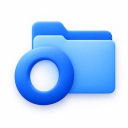
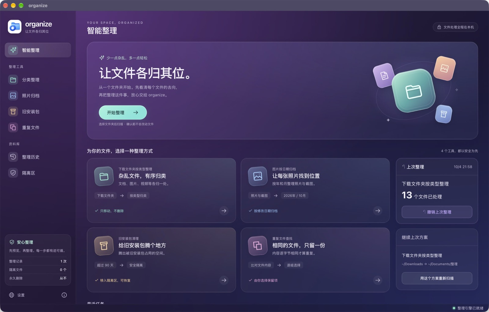
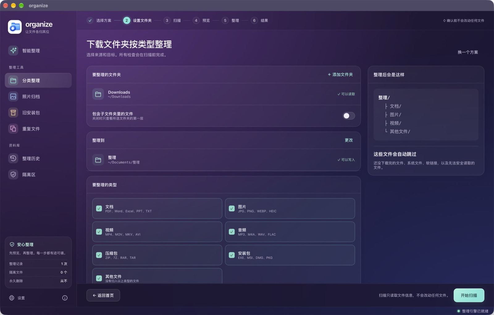
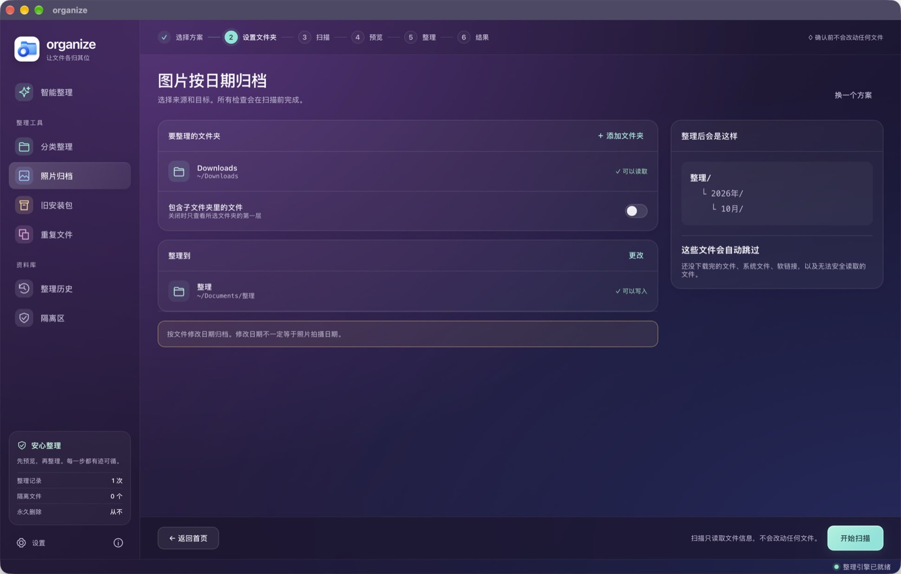
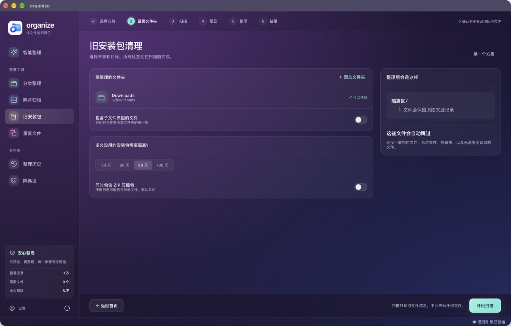

Organize
开源 · Mac 桌面应用 · 命令行支持 Mac、Windows、LinuxOpen source · Mac app · command line for Mac, Windows, and Linux
选择文件夹后扫描。确认之前不会改动任何文件。处理全程在这台电脑上。Choose a folder, then scan. Nothing changes until you confirm. Files stay on this computer.
macOS 14+ · Apple Silicon（M 系列）· 早期体验版。尚未经过 Apple 公证，系统可能阻止打开；请勿关闭系统安全保护。macOS 14+ · Apple Silicon (M-series) · Early access. Not Apple notarized; macOS may block opening. Do not disable system security protections.
正在查询安装包；也可通过发布记录确认是否已有 DMG 附件。Checking for an installer. You can also check Releases for a DMG attachment.
- 选择方案Choose a plan
- 设置文件夹Set folders
- 扫描Scan
- 预览Preview
- 整理Organize
- 结果Result




命令行Command line
同一套整理也可以写成规则，在 Mac、Windows 和 Linux 上运行。下面这条规则把下载文件夹里的 PDF 移到文档中的发票目录。The same kind of cleanup can be written as rules and run on Mac, Windows, and Linux. This rule moves PDFs from Downloads into an invoices folder.
rules:
- name: Invoices
locations: ~/Downloads
filters:
- extension: pdf
actions:
- move: ~/Documents/Invoices/保存后运行 organize sim，先看将要发生的变化；确认之后再运行 organize run。安装包名是 organize-tool，代码以 MIT 许可公开。Run organize sim to see what would change, then organize run when it looks right. The package name is organize-tool. The code is MIT licensed.
源码SourceMIT